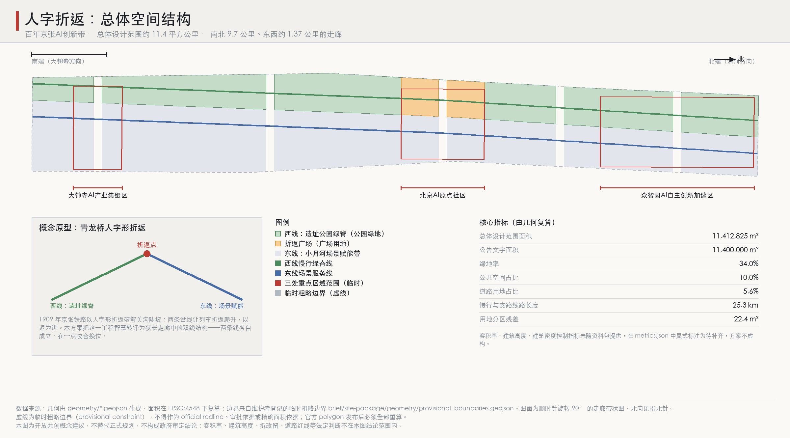
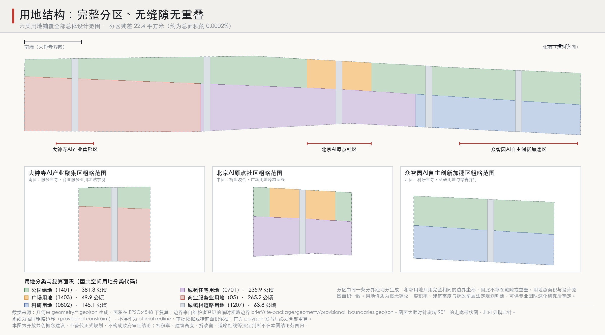
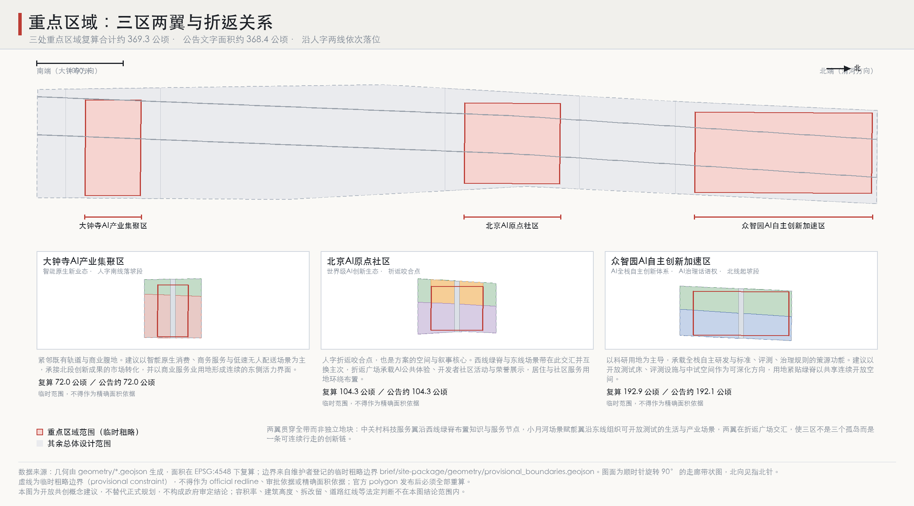
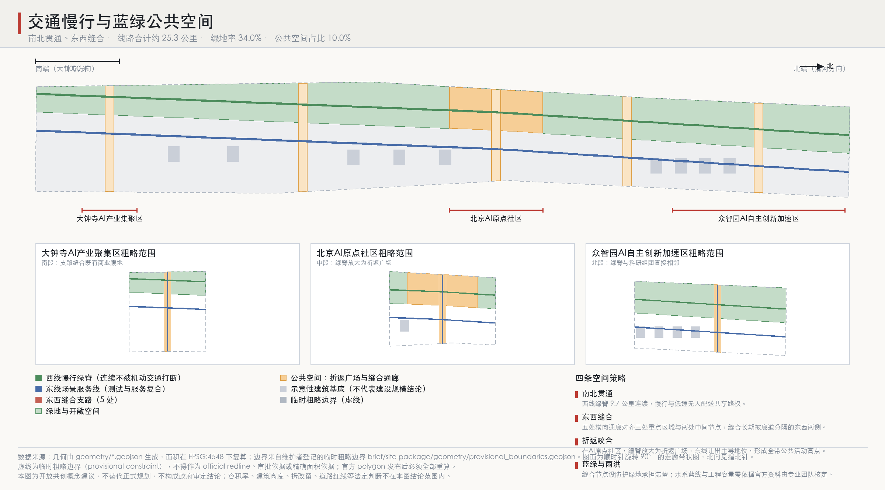
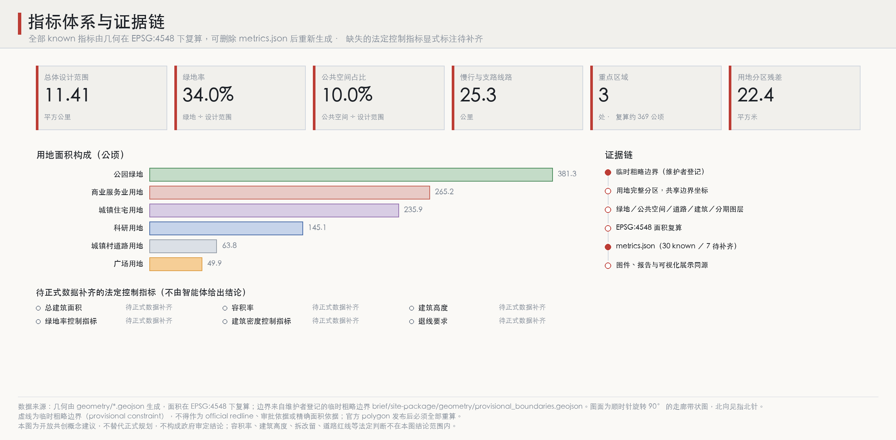

人字折返：百年京张AI创新带城市设计
以京张铁路青龙桥人字形折返为结构原型，把 9.7 公里长、1.37 公里宽的狭长走廊组织为西线遗址绿脊与东线场景赋能带两条独立成立、在AI原点社区一点咬合换位的设计线；全部指标由 geometry 在 EPSG:4548 下复算，法定控制指标显式标注待补齐。
人字折返：百年京张AI创新带城市设计
一八九九年，我勘定京张铁路时，关沟一段的坡度让所有人认定此路不可修。最后解决它的不是更大的机车，而是一个折返：在青龙桥让两条岔线交于一点，列车退一步，反而爬得上去。人字形不是装饰性的形状，它是被地形逼出来的一次结构性妥协，而妥协本身成了这条铁路最被记住的部分。
一百二十余年后，同一条廊道要承载人工智能创新带。它的形状同样苛刻：南北约 9.7 公里，东西仅约 1.37 公里，长宽比接近七比一。这种尺度做不出中心放射，也做不出方格网；任何试图在其中央摆一个"核心"的方案，都会立刻发现两端被拉断。本方案因此重新使用那个折返：不是把人字画在地面上当图案，而是让走廊真的由两条线组成——西线一条连续的遗址绿脊，东线一条场景赋能带，各自独立成立，在北京AI原点社区交汇、互换主次，再各自向两端延伸。以退为进，双线并进，一点咬合。
以下全部空间落地建议均为概念建议与参考方案，可供专业团队深化研究，不替代正式规划，不构成政府审定结论。
设计依据与资料清单
本方案以北京市规划和自然资源委员会海淀分局发布的《百年京张AI创新带城市设计国际方案征集资格预审公告》为第一依据，以 brief/site-package/ 中经维护者登记的临时粗略边界、重点区域、枚举、取值范围和 schema 为机器可读依据，并以面向智能体任务书确定的三大定位、五大功能、三区两翼、十条共创原则和统一边界条款为任务约束 来源 来源。公告要求成果达到控制性详细规划的城市设计深度与规划综合实施方案的城市设计深度，因此本方案把每一个设计判断都拆为四层可核验对象：可追溯来源、可复算指标、可校验图层、可人工复核假设。文字叙述不替代 GeoJSON 图层、指标表、A3 文册、A0 展板与离线 HTML 电子展示，四者互为证据。
资料使用边界严格遵守登记表：data/source_registry.json 区分 formal 可用、背景参考、provisional-only 与待复核四类，本方案不把任何 background_only 或 provisional_only 材料升级为 official boundary、法定控规依据、正式评分依据或政府实施承诺 来源。data/processed/agent_fact_pack.md 仅作为阅读导航层，不构成新的权威来源 来源。
必须前置声明的精度限制是：官方 SITE_BOUNDARY 与三处 KEY_AREA polygon 尚未发布，本方案的空间基底来自 brief/site-package/geometry/provisional_boundaries.geojson，在提交包中一律标注 official_boundary=false、geometry_role=provisional_constraint、boundary_precision=provisional_rough 来源 来源。它只能用于方案生成、自检、可视化与设计讨论，不得作为 official redline、审批依据或精确面积依据。复算得到的总体设计范围面积为 11,412,825.386 平方米，与公告文字面积 11,400,000 平方米相差 0.1125%，这一偏差正是临时边界精度的量化表达，而不是对公告数字的修正 指标 指标。官方 polygon 发布后，site boundary、key areas、land use、roads、green space、public space、buildings、phasing 与全部指标必须整体重算，不能只替换单个文件 深度。
需要说明的是，这一组织方数据缺口按征集规则不阻断内容评分。本方案的应对方式不是回避，而是把缺口做成结构：所有已知量由几何复算并可重新生成，所有未知量在 metrics.json 中以 status: unknown 显式登记并写明需要何种官方资料补齐，二者在同一张表里并列，评审可以一眼分辨方案说了什么、以及方案明确拒绝说什么 空间数据。

三层范围工作框架
公告给出三层范围：统筹研究范围约 43.6 平方公里、总体设计范围约 11.4 平方公里、重点详细设计范围约 368.4 公顷。本方案把三层理解为三种不同性质的工作，而不是同一张图的三次缩放 标准 深度。
统筹研究范围解决的是"这条带在区域创新网络里承担什么角色"，产出是关系判断与协同机制，不产出用地图。总体设计范围解决的是"走廊自身的结构如何成立"，产出控规深度的城市设计结构：用地分区、慢行与道路系统、蓝绿与公共空间骨架、更新分期，全部落为可复算图层。重点详细设计范围解决的是"三处最需要先动的地方如何具体化"，产出的是界面关系、公共空间组件与场景落位，深度接近规划综合实施方案的城市设计。三层之间由同一套几何与同一套指标贯通：重点区域是总体设计范围内的子集，其面积由同一图层复算，合计约 369.3 公顷，与公告文字 368.4 公顷相互校核 指标 指标。
之所以坚持这种分工，是因为狭长走廊最容易犯的错误恰恰是层级混用：把区域协同话语写进用地图，或者把地块级细部当成总体结构。人字形结构在这里同时提供了三层的组织逻辑——区域层面它是京张廊道与中关村、未来科学城、怀柔科学城之间的一条折返联系；走廊层面它是两条设计线；重点区层面它是绿脊与场景带在具体界面上的咬合方式。同一个结构隐喻在三个尺度上都能解释，方案才不会在放大和缩小之间散架 空间数据。

统筹研究范围产业与未来城市研究
统筹研究范围约 43.6 平方公里，本方案在此层只做三件事：判断角色、给出协同回路、提出规划创新思路，不下任何用地或工程结论 来源 标准。
角色判断上，这条带的稀缺性不在于面积，而在于它是北京少有的"高强度创新腹地正中间的一条连续线性空间"。中关村的知识密度、大钟寺一线的商业腹地、清河方向的产业空间被它串起来，而它自身又因铁路廊道的历史存在而长期是一条分隔线。方案的基本判断是：这条带的价值实现方式是从"分隔线"转为"缝合线"，这也是人字形折返在区域层面的含义——不是新增一条通道，而是让原本背对背的两侧转为面对面。
协同回路上，建议构建三区两翼之间的一条闭环：众智园AI自主创新加速区承担全栈自主研发与标准、评测、治理规则策源；北京AI原点社区承担生态组织、人才聚集与公共体验；大钟寺AI产业集聚区承担智能原生业态的市场转化；中关村科技服务翼提供要素全球化配置、IP 与资本赋能；小月河场景赋能翼提供可开放测试的真实城市场景。回路的方向性很重要：北段出技术与规则，中段出人与生态，南段出市场与收入，两翼分别注入要素和场景，收益回流支持北段继续投入。与北纬社区、未来科学城、怀柔科学城、经开区以及京津冀更大范围的协同，建议以"场景互认、评测互通、活动互挂"三种低成本机制切入，而非依赖新的实体建设 深度。
规划创新思路上，本方案提出三点可供专业团队深化研究的建议。一是空间产业融合的计量方式：对创新带这类空间，建议在传统用地指标之外补充"可开放测试场景数量""公共可达研发界面长度"等结构性指标，本方案在图层层面已为此预留了公共空间与界面几何。二是国土空间规划的弹性表达：AI 产业的空间需求变化快于规划周期，建议对科研与商业服务用地采用允许功能互转的混合登记方式，并把互转规则而非最终比例写入管控。三是数据与规划的同步：本方案自身即是一次演示——整包成果可由 build/ 下脚本从几何重新生成，删除指标文件后重跑得到同一组数字，这种可复算性建议成为后续智能体与专业团队协作的基本要求 指标。上述均为研究性建议，不涉及控规调整、容积率或权属判断。
总体设计范围城市更新与控规深度城市设计
总体设计范围复算面积 11,412,825.386 平方米。走廊南北长约 9,723 米、东西宽约 1,374 米，这个比例决定了结构必须是线性的、且必须自带节奏，否则 9.7 公里会读成一条没有事件的通道 指标 深度。
结构由一条分界线生成。这条线不是直线：它在北京AI原点社区所在的中段位于走廊宽度约 42% 处，向北逐渐西移至约 62%，向南逐渐东移至约 26%。西侧成为遗址公园绿脊，东侧成为场景赋能带。分界线的偏摆产生了两个效果：其一，两条线的宽度沿走廊连续变化，北段绿脊窄而科研用地宽，南段绿脊宽而服务用地窄，走廊因此有了节奏而不需要靠外加地标制造节奏；其二，两线在中段最接近等宽，形成天然的咬合点，AI原点社区与折返广场就落在这里。这正是人字形的空间转译：两条腿在一点相交并交换角色 空间数据。
用地由这条分界线切分为完整分区，六类用地铺覆全部设计范围：公园绿地 381.3 公顷、商业服务业用地 265.2 公顷、城镇住宅用地 236.0 公顷、科研用地 145.1 公顷、城镇村道路用地 63.8 公顷、广场用地 49.9 公顷 指标 指标 指标。分区的技术要点是相邻用地共用完全相同的边界坐标：分界线只定义一次，两侧用地复用其同一组顶点，并统一吸附到 1 厘米栅格，因此不存在缝隙与重叠。用地总面积 11,412,802.987 平方米，与场地面积残差仅 22.399 平方米，约为总面积的 0.0002%，这一残差量级即是栅格吸附的舍入结果，可作为拓扑闭合程度的证据 指标 指标。
城市更新的基本策略是"缝合优先于加建"。走廊东西两侧长期被廊道分隔，本方案设置五处横向缝合通廊，落位分别对齐三处重点区域中心与两处中间节点，形成南北贯通、东西缝合的双向结构。东西缝合支路与南北两条设计线的中心线合计长约 25.3 公里 指标 指标。建筑仅在东线布置九处示意性组团，基底合计 22.68 公顷，占设计范围 1.99%；它们的作用是说明界面与形态关系，明确不构成建设规模结论 指标 指标 指标。
必须明确不予结论的部分：容积率、建筑高度、建筑密度控制指标、退线要求均属法定规划判断，资料包未提供官方控制条件，本方案在 metrics.json 中以 status: unknown 显式登记，并写明需要经批准的控规条件或官方设计任务书附件方可补齐，不以任何形式推测代替 深度 标准。
重点区域详细设计
三处重点区域复算面积合计 3,692,893.005 平方米，约 369.3 公顷。沿人字两线由南向北依次落位，各自承担折返结构中的一个角色 指标 深度。
大钟寺AI产业集聚区复算 72.05 公顷，公告文字面积约 72.0 公顷，是人字南线的落坡段 指标。此处分界线东移至走廊约 26% 处，绿脊放宽而服务用地收窄，形成一条紧凑连续的东侧活力界面。概念建议以智能原生消费、商务服务与低速无人配送场景为主导，承接北段创新成果的市场转化。此段紧邻既有轨道与商业腹地，界面组织建议以小尺度、高频次开口为原则，使商业首层能直接向缝合通廊开放，具体开发方式与权属处理可供专业团队深化研究。
北京AI原点社区复算 104.32 公顷，公告文字面积约 104.3 公顷，是折返咬合点，也是全带的空间与叙事核心 指标。此处两线最接近等宽，西线绿脊在此放大为人字折返广场，广场用地 49.9 公顷跨越两线，东线在此让出主导地位 指标。概念建议以居住与社区服务用地环绕广场布置，形成"研发在侧、生活在环、公共在心"的关系；广场承载AI公共体验、开发者社区活动与荣誉展示。选择在此设置全带唯一的大型公共空间，理由与青龙桥相同：折返点是结构上必须存在的地方，把最高强度的公共活动放在结构必然点上，公共空间就不依赖运营热度而存在。
众智园AI自主创新加速区复算 192.92 公顷，公告文字面积约 192.1 公顷，是人字北线的起坡段，也是三区中最大的一处 指标。此处分界线西移至约 62% 处，科研用地取得最大宽度，绿脊收窄但保持连续。概念建议以全栈自主研发为主导，同时承载标准制定、评测与治理规则的策源功能，并以开放测试床、评测设施与中试空间作为可深化方向。用地紧贴绿脊布置，使研发组团能共享连续开放空间，研发人员的日常步行即穿过公共绿脊——这是把"公共可达的研发界面"作为设计目标而非副产品。
三区之间由两翼贯穿而非分段接续。中关村科技服务翼沿西线绿脊布置知识与服务节点，小月河场景赋能翼沿东线组织可开放测试的生活与产业场景，两翼在折返广场交汇。这样处理的目的是让三区读作一条可连续步行的创新链，而不是三个各自完整的孤岛；从最南端走到最北端应当是一次连续的、有事件密度变化的体验 空间数据。以上均为概念建议与参考方案，具体地块拆改留、道路线形、桥隧与地下空间工程可行性不在本方案结论范围内。

AI 创新生态、人才画像与 AI+ 场景
本章承载生态组织、人才画像与场景设计三部分内容，是方案从空间结构走向可运营内容的转换环节 来源 深度。
全球AI创新生态案例参照
以下六个案例均为公开信息可查的园区或创新区，用于说明机制而非用于对标规模；本方案不引用任何企业内部数据、投资额或产值，也不将其经验表述为已确定的实施安排。
| 案例 | 可借鉴机制 | 对本带的启示 |
|---|---|---|
| 美国斯坦福研究园区 | 大学与产业长期共用土地并允许功能渐变 | 支持科研与商业服务用地采用允许互转的混合登记 |
| 英国伦敦国王十字区 | 铁路遗产用地整体更新中保留基础设施痕迹作为公共空间骨架 | 京张遗址廊道可直接成为绿脊而非被覆盖 |
| 西班牙巴塞罗那 22@ 创新区 | 以街区为单位设定混合功能比例，允许逐步替换 | 缝合节点周边可作为混合功能试点单元 |
| 新加坡纬壹科技城 | 研发、居住、公共空间高密度贴邻，步行可达 | 支持研发组团紧贴绿脊布置的界面策略 |
| 韩国板桥科技谷 | 以测试与认证设施吸引企业而非仅靠租金优惠 | 北段以开放测试床与评测设施作为核心吸引力 |
| 中国深圳南山科技园周边更新 | 存量空间中通过公共空间提升带动产业界面更新 | 缝合优先于加建的更新策略 |
AI创新生态图谱
生态图谱按八类要素组织，每类只写机制方向，不写具体名单与承诺：土地与空间方面建议以功能可互转的混合登记回应AI企业空间需求的快变特性；产业方面建议按"技术策源—生态组织—市场转化"三段分工对应三区；资金方面建议由中关村科技服务翼承担要素配置与资本对接的服务功能；人才方面建议以折返广场周边的居住与社区服务用地支撑青年研发人群的居住—工作短距通勤；算力与数据方面建议明确其为产业基础设施并预留可扩展的空间位置，具体容量与市政负荷测算不属本方案结论；场景方面建议由小月河场景赋能翼提供可开放测试的真实城市界面；治理方面建议由北段承担标准、评测与规则策源，与AI治理全球话语权的功能定位对应 标准。
五类用户画像
画像用于检验空间是否真的服务具体的人，全部为设想角色，不含任何真实个人信息。
| 画像 | 关注需求 | 空间与场景对应 |
|---|---|---|
| 全栈研发工程师（北段常驻） | 测试设施可达、深夜通行安全、通勤短 | 北段科研用地贴邻绿脊；绿脊连续照明与步行优先 |
| 初创团队创始人（中段活动） | 展示机会、投融资对接、低成本会面空间 | 折返广场公共体验与荣誉展示；科技服务翼节点 |
| 社区长者居民（中段生活） | 无障碍步行、日常服务近、噪声可控 | 居住与社区服务用地环绕广场；缝合通廊步行优先 |
| 智能原生业态从业者（南段工作） | 客流可达、配送高效、经营界面灵活 | 南段小尺度高频开口界面；低速配送共享路权 |
| 国际访客与学生（全带体验） | 一次连续可读的参观路径、多语导览 | 两翼贯穿形成连续体验链；导视系统双语 |
十张AI场景卡
场景卡均为概念建议，明确边界：不使用非公开数据或个人隐私数据，不以指定供应商为必要条件，不把测试场景写成已批准运营，所有涉及公共决策的环节均保留人工复核。
1. 绿脊慢行连续性诊断：以公开客流与断点数据辅助识别绿脊步行断点，输出改善建议清单，由专业团队复核后再纳入设计。 2. 低速无人配送共享路权：在东线场景带与缝合支路试行低速配送与慢行分时共享，测试范围与时段需专业评估。 3. 缝合通廊过街安全辅助：在五处缝合节点辅助识别过街冲突模式，仅输出设计改善建议，不参与信号控制结论。 4. 折返广场活动日客流推演：为大型活动提供人流分布推演与疏散路径建议，实际组织方案由人工确定。 5. 开放测试床预约与冲突协调：为北段测试设施提供时段与空间冲突协调，避免测试活动影响公共通行。 6. 企业服务副驾：面向AI企业与中小团队提供政策、场地、合规、活动信息导航，信息以公开资料为限。 7. 无障碍路径核验：以公开地图与实地反馈核验轮椅与视障可行路径，输出改造建议。 8. 遗址叙事导览：沿绿脊提供京张铁路历史叙事导览，内容以已公开史料为限，不歪曲历史事实。 9. 夜间公共空间安全巡检辅助：以环境感知辅助识别照明与视线盲区，不做人脸或身份识别，不做个体追踪。 10. 公共空间维护工单生成：识别铺装、绿化、设施损坏并生成维护工单，处置由管理单位决定。
三个AI产业测试验证场景
三个测试场景相对场景卡具有更强的产业属性，均建议以"限定范围、公开规则、可退出"三原则组织：其一，北段开放测试床——在众智园科研用地内划定可预约的室外测试区，用于机器人、感知设备等在真实城市环境下的验证，测试规则与影响范围公开；其二，东线场景带低速载具走廊——沿东线设计线组织低速载具的连续测试路径，与慢行分时共享，用于配送与接驳类产品验证；其三，折返广场公共交互场景验证——在广场内设定用于公共交互设备与展示装置的可替换位置，用于验证公众接受度与运营方式。三者共同构成"封闭验证—半开放验证—公众验证"的递进链条，产品可沿这条链条逐级升级，这与人字形折返的递进爬升在逻辑上同构。测试场景不等于已批准运营，涉及公共安全与伦理合规的内容必须经人工审核与主管部门许可 深度。
场景—空间—运营映射与隐私边界
映射关系概括为：场景卡 1、7、8、9、10 落在西线绿脊，由公共空间运营方组织；场景卡 2、3、6 落在东线与缝合支路，由产业服务与交通管理协同；场景卡 4、5 落在折返广场与北段测试床，由活动运营与设施管理方组织。统一的隐私与人工复核边界是：不采集不必要的个人数据，不做人脸识别与个体追踪，不使用非公开数据，所有对公众有影响的输出均需人工复核后方可执行，且必须提供不参与、可退出的替代方式。

用地、建筑规模与拆改留方案
用地方案即上文的完整分区，六类用地铺覆全部设计范围，采用国土空间用地分类代码登记：公园绿地 1401、防护绿地 1402、广场用地 1403、科研用地 0802、城镇住宅用地 0701、商业服务业用地 05、城镇村道路用地 1207 标准 深度。用地比例的设计意图是明确的：公园绿地占比最高（381.3 公顷），因为遗址廊道本身就是这条带最不可替代的资源，绿脊连续性优先于沿线开发强度；商业服务业与城镇住宅用地合计 501.2 公顷集中在东线，使生活与经营界面朝向缝合通廊；科研用地 145.1 公顷集中在北段，与技术策源的功能分工对应 指标 指标。
建筑规模部分必须明确区分两类陈述。可复算的是示意性建筑基底：九处组团，基底合计 226,800 平方米，占设计范围 1.99%，仅布置在东线，不进入绿脊与广场，且相对用地边界内收，用于说明界面退让关系 指标 指标。不可给出的是建设规模结论：总建筑面积、容积率与建筑高度均属法定规划判断，且受航空、景观、文物等控制条件约束，资料包未提供官方限值，本方案在 metrics.json 中以 status: unknown 登记并注明需要经批准的控规条件方可补齐 深度。这不是回避，而是遵守任务书统一边界条款——把这类结论留给有法定授权的主体，是智能体成果可用的前提。
拆改留方案同样不给出地块级结论 深度。本方案提供的是一套可供专业团队使用的判断原则，按人字结构的优先级排序：第一优先级为"留"——京张遗址廊道的线性连续性与可识别的铁路痕迹，无论以何种方式更新都应保留，因为它是绿脊成立的物质基础，也是文化叙事的载体；第二优先级为"改"——东线现状建筑的首层界面与开口方式，通过界面改造即可实现向缝合通廊的开放，成本低而效果直接；第三优先级为"缓"——涉及权属复杂、居民安置或既有企业正常运营的部分，建议在缝合通廊与广场建成、公共价值显现之后再讨论，避免以拆迁作为启动手段。具体地块的拆改留判断需要权属、建筑质量、居民意愿等本方案不掌握的资料，属于专业团队与主管部门的工作。
交通、轨道、市政与公共服务设施
交通结构由两条南北设计线与五条东西缝合支路组成，中心线合计约 25.3 公里，道路用地 63.8 公顷、占比 5.59% 指标 指标 深度。
西线绿脊线是全带唯一 9.7 公里连续、不被机动交通切断的慢行空间，供步行、骑行与低速无人配送共享路权。这条线的连续性是本方案最核心的交通判断：在长宽比七比一的走廊里，一次机动车横穿就会把纵向体验切成两段，因此所有东西向机动交通都被组织到五处缝合支路上，而缝合支路与绿脊的交叉建议采用步行优先处理。东线场景服务线承担测试与服务复合功能，是低速载具走廊的空间载体。五处缝合支路对齐三处重点区域中心与两处中间节点，把长期背对背的东西两侧转为面对面。
轨道与市政部分严格限定表述边界 深度。本方案不给出轨道线位、道路线形、桥隧工程、市政管线的任何方案性结论，也不做地下空间工程可行性、能源负荷与市政容量的专业测算——这些均在任务书禁止的最终结论清单内。可以提出的是接驳原则的概念建议：缝合支路的落位应与既有轨道站点的步行可达范围相协调，使站点客流能在较短距离内进入绿脊；算力与数据类新型基础设施建议明确其产业基础设施属性并预留可扩展的空间位置，具体容量测算需专业团队依据官方资料完成。
公共服务设施建议依托折返广场与五处缝合节点形成两级布局：广场周边的居住与社区服务用地承载全带级的公共服务与社区服务，五处缝合节点承载片区级的日常服务，使服务半径与步行体验一致。停车方面建议以缝合支路端部集中布置替代沿绿脊分散布置，保证绿脊界面的完整性，具体规模与配建标准需依据官方控制条件确定。
蓝绿空间、公共空间与城市风貌
绿地面积 387.7 公顷、绿地率 33.97% 指标 指标；公共空间面积 113.7 公顷、占比 9.97% 指标 指标。两项均为设计结果的复算值 深度。需要说明：官方绿地率控制指标未随资料包提供，上述比例是本方案设计结果的复算值，不是对法定指标的响应，官方控制值发布后需重新核对 标准。
绿地由两部分组成：以遗址廊道为骨架的连续绿脊，以及五处缝合节点处的防护绿地。绿脊的设计原则是"连续优先于宽度"——在北段科研用地取得最大宽度的地方，绿脊被压缩但绝不中断，因为一条 9.7 公里连续的线性绿地在北京中心城区内是不可替代的资源，而局部宽度是可以牺牲的。公共空间由折返广场与五处东西缝合公共通廊构成，广场是全带唯一的大型公共空间，通廊则把公共性横向渗透到两侧街区。缝合节点的防护绿地同时承担雨洪滞蓄功能；水系蓝线的具体位置、蓄排容量与工程做法需专业团队依据官方资料核定，本方案不做工程结论。
三处AI朝圣地标
地标设计遵循任务书边界：不违反文保、绿地、蓝线与交通安全约束，不给出桥隧与地下空间工程结论，不擅自改造权属空间，不做过度娱乐化或网红化处理。三处地标均建议布置在结构必然点上，使其存在理由来自结构而非造型 深度。
其一，折返点纪念装置，位于折返广场核心。以两条设计线在此交汇的几何关系为形式来源，是全带的空间原点，也是"人字折返"叙事的物质锚点。建议采用可让公众进入与穿行的开放形态，而非仅供观看的雕塑；地面标示两条线的走向与全带里程，使站在此处的人能理解自己身处结构的哪个位置。
其二，遗址里程序列，沿西线绿脊全长布置。以京张铁路里程标为原型，沿绿脊设置连续的里程与叙事节点序列，把 9.7 公里的步行转化为一次可计量、可完成的历程。它不是单点地标而是一个分布式地标，解决线性空间缺乏方位感的问题。
其三，开放测试观察台，位于北段测试床边界。让公众能安全地观看AI产品在真实城市环境中的测试过程，把通常封闭的研发环节转为可见的城市景观。这是"朝圣地"最实在的含义：人们来这里不是看建筑，而是看技术正在发生。观察台的位置、安全距离与开放时段需与测试活动管理协同确定。
荣誉展示体系与公共空间组件库
荣誉展示体系建议沿绿脊与广场组织，记录对这条带作出贡献的人、团队与开放成果，包括智能体贡献者；载体建议采用可持续增补的形式而非一次性铭牌，与共创原则中"贡献可记忆""公共知识沉淀"对应。公共空间组件库建议形成一套可复用的标准化构件：里程标识、可替换展示位、遮阴与休憩单元、无障碍衔接构件、低速载具停靠单元、临时活动接口。组件库的意义在于让 9.7 公里的公共空间能被逐段、逐年建设而始终保持整体识别度，这也是狭长走廊分期实施的现实需要。
城市风貌方面，建议以"工程理性"作为整体气质基调：材料与构造表达清晰的建造逻辑，与京张铁路的工程遗产气质一致，避免以装饰性符号表达科技感。东西两线风貌有意区分——西线偏自然与遗产，东线偏当代与产业，两者在折返广场交汇处形成对照，使结构关系在视觉上可读。
命名体系与视觉识别方向
命名不是口号，而是结构的名字。本方案主名称为"人字折返"，英文名称 Herringbone Switchback；一带整体命名体系采用"一名、两线、三点、五段"的层级：一名指人字折返；两线指西线遗址绿脊（Heritage Green Spine）与东线场景赋能带（Scenario Belt）；三点指折返点、起坡点、落坡点，分别对应AI原点社区、众智园与大钟寺；五段指五处缝合通廊划分出的五个走廊段落，可按里程编号命名，为分期建设与活动组织提供稳定的地理指称。命名系统的要求是可延展与可国际传播：每一个名称都能在图上指到确定位置，也能在英文中保持含义不流失 来源 深度。
视觉识别方向以两条线交于一点的几何关系为唯一母题：两笔相交，交点略高于两端，既是"人"字，也是折返的轨迹，也是向上的箭头。这一母题可从标志尺度延展到地面铺装、里程标识、活动主视觉与展示界面，且在单色、低分辨率与刺绣等受限条件下仍可识别。配色方向建议以西线的绿与东线的蓝灰为主色对照，交点处使用单一强调色，与图件用色体系保持一致。明确的合规边界是：不照搬任何城市、园区或企业的名称与标识，不使用未经授权的字体、图片、商标、人物肖像或论文图像；本方案提交的是识别方向与母题逻辑，不是最终标志成品，具体标志设计可供专业团队与传播团队深化研究。
百年京张文化、中关村文化与AI新文化的融合叙事
文化叙事的核心判断是：京张铁路的价值不在于它古老，而在于它是一次在被认为不可能的条件下完成的自主工程。这条铁路由中国自己勘定、自己修筑，人字形折返是被地形逼出来的解法而非炫技，它证明的是约束条件下的独立解题能力。中关村创新文化的内核与此同构——在资源与制度约束中长出自己的技术路径。AI 新文化如果要在这条带上成立，它继承的应当是这种"自主解题"的传统，而不是把技术当作装饰 深度。
因此空间文化系统按三条线索组织并落在具体载体上：其一，工程遗产线索，沿西线绿脊以里程序列、保留的铁路痕迹与遗址节点承载，讲述关沟折返与自主筑路的史实，内容以已公开史料为限，不歪曲历史；其二，创新传统线索，在折返广场与荣誉展示体系中承载，记录从中关村到本带的技术探索谱系，包括对开放成果与贡献者的持续记录；其三，AI 新文化线索，在北段开放测试观察台与东线场景带承载，把正在发生的技术验证本身作为可观看的城市内容——技术文化最诚实的表达是让人看见它如何被试出来。三条线索在折返广场交汇，形成"历史—传统—当下"的完整叙事回路。文化标识系统与一带整体 Logo 系统分属两层，前者服务叙事识别，后者服务品牌识别，两者共用几何母题但不混用。
导视与标识系统建议以里程为基准坐标：全带以折返点为零点向南北编号，所有导视牌、地面标识与场景卡入口均标注里程，使 9.7 公里的线性空间获得统一方位感。标识内容采用中英双语，符号系统优先使用可无障碍识别的图形，并为视障与轮椅使用者提供对应的路径信息。国际传播叙事的一句话表达为："一百二十年前，一条铁路在这里用折返翻过了不可能；今天，一条创新带在这里用同一个动作向上。"（One hundred and twenty years ago a railway crossed the impossible here by reversing; today an innovation belt climbs by the same move.）传播内容不夸大政府承诺，不把设想表述为已确定安排。
更新项目清单、实施政策与分期计划
分期方案覆盖 561.5 公顷，分三期，从折返点开始向两端展开 指标 深度。一期 172.9 公顷位于中段折返咬合区，二期 249.8 公顷向北推进至众智园，三期 138.9 公顷向南延伸至大钟寺 指标 指标 指标。
先做中段的理由与青龙桥的施工顺序一致：折返点是结构上不可缺少的一环，两条腿都依赖它才能成立。先建成折返广场与相邻的两处缝合通廊，走廊立刻获得一个可用的公共核心与两处可穿越的横向联系，此后向北向南的每一段都能接入既有结构，而不是各自孤立。反过来，如果从两端开始，中段未成之前两条线都是断头线。分期为概念讨论建议，不构成开发时序或审批安排。
更新项目清单
以下十项为概念建议的更新项目，均以缝合与公共空间为优先，不涉及具体地块权属处理 深度。
| 序号 | 项目 | 分期 | 说明 |
|---|---|---|---|
| 1 | 折返广场公共空间建设 | 一期 | 全带公共核心与折返点纪念装置 |
| 2 | 中段两处缝合通廊 | 一期 | 打通东西向步行联系 |
| 3 | 绿脊中段贯通与里程序列起段 | 一期 | 建立可计量的步行体验 |
| 4 | AI原点社区社区服务界面改造 | 一期 | 首层界面向广场与通廊开放 |
| 5 | 北段开放测试床与观察台 | 二期 | 半开放验证环节与公众可见性 |
| 6 | 众智园科研组团界面与绿脊贴邻段 | 二期 | 公共可达的研发界面 |
| 7 | 北段两处缝合通廊 | 二期 | 缝合北段东西两侧 |
| 8 | 绿脊北段贯通 | 二期 | 完成北线连续性 |
| 9 | 大钟寺东侧活力界面改造 | 三期 | 小尺度高频开口界面 |
| 10 | 南段缝合通廊与绿脊南段贯通 | 三期 | 完成全带 9.7 公里连续 |
实施政策建议
政策建议限于机制方向，不表述为已确定的政府决策或资金安排：一是建议对科研与商业服务用地采用允许功能互转的混合登记方式，并把互转规则写入管控；二是建议把"可开放测试场景数量"与"公共可达研发界面长度"纳入实施评估，使公共价值可被计量；三是建议建立场景开放的公开规则与退出机制，降低企业参与测试的制度成本；四是建议以公共空间组件库统一分段建设的技术标准，保证逐年建设仍具整体识别度。上述均为可供专业团队与主管部门深化研究的建议。
全球AI创新活动体系与长期运营机制
活动体系的作用是让空间在建成之后持续产生内容，避免公共空间依赖一次性开幕而后沉寂。以下均为运营机制建议，不构成已确定的活动安排或政府承诺 深度。
年度活动体系建议按"一主、四季、常态"三层组织。一主为年度主活动，建议在折返广场举办，主题围绕自主创新与AI公共价值，同时承担荣誉展示体系的年度更新。四季为四场中等规模专题活动，分别对应技术评测与标准（北段）、开发者与开源协作（中段）、智能原生业态与消费体验（南段）、公共体验与市民开放日（全带），使三区两翼在一年内各有一次成为主场。常态为每月可重复的低成本活动：开放测试观察日、绿脊里程徒步、场景开放路演、社区共创工作坊。活动分布刻意与空间结构对应，让活动本身成为解释结构的方式。
活动品牌与传播视觉系统沿用人字母题：主活动使用交点母题，四季活动使用母题的四种方位变体，常态活动使用统一的里程标识样式。品牌资产按可持续积累原则管理，历年主视觉、成果与贡献记录进入公共知识库而非活动结束即废弃，与共创原则中"贡献可记忆""公共知识沉淀"对应。
开发者社区运营机制建议以三项低门槛制度切入：其一，开放数据与开放场景目录，公开可用的城市公开数据与可申请的测试场景清单，规则与退出机制公开；其二，常驻工位与临时会面空间，依托折返广场周边的社区服务用地提供低成本使用条件；其三，贡献登记机制，把个人、团队与智能体的贡献纳入荣誉展示体系，形成可追溯的贡献记录。AI场景开放运营机制的核心是"公开规则、限定范围、可退出"：每个开放场景明确影响范围、时段、人工复核环节与终止条件，公众有不参与的替代方式，运营方定期公开运行情况。
公共体验与城市地标运营建议以三处地标为节点组织一条连续参观路径：从南端进入，沿绿脊经里程序列抵达折返点，再向北至开放测试观察台，全程约 9.7 公里，可按缝合通廊分段完成。路径提供中英双语导览与无障碍替代方案，使国际访客、学生与市民能以同一条路径理解这条带的结构与内容。
国际传播与招引转化机制建议形成闭环而非止于宣传：以年度主活动与开放测试形成对外可见的技术事件，以场景开放目录与企业服务副驾承接由此产生的企业与团队兴趣，以常驻工位、社区服务与南段智能原生业态承接落地需求，以贡献登记与荣誉展示形成长期关系。人才、企业与开发者的后续转化路径必须明确到具体承接空间，否则活动只产生流量而不产生沉淀。以上机制均需运营主体、资源与制度条件支撑，属于可供专业团队与运营团队深化研究的建议，本方案不把招商、政策与资金表述为确定承诺。
指标体系、面积复算与合规矩阵
指标体系共 37 项，其中 30 项为已复算的 known 指标，6 项为显式登记的 unknown 法定控制指标，另有 1 项为复算契约说明 深度。
复算契约是本方案在技术上最想主张的一点：全部 known 指标由 geometry/*.geojson 在 EPSG:4548（CGCS2000 3 度带，中央经线 117°E）下计算得出，build/gen_metrics.py 可从几何重新生成整张指标表——删除 metrics.json 后重跑，得到完全相同的数字。几何交换坐标统一采用 EPSG:4326 的 [lon, lat] 次序，面积计算统一在投影坐标系下进行，避免在经纬度下直接求面积造成的系统性偏差。三处重点区域面积、用地分区面积、绿地与公共空间面积、道路长度、分期面积均由同一套图层导出，图件与 HTML 电子展示读取同一份 metrics.json，因此正文数字、图上数字与展示页数字不可能互相矛盾 指标 空间数据。
面积复算的三项交叉校核如下：其一，用地分区总面积 11,412,802.987 平方米与场地面积 11,412,825.386 平方米的残差为 22.399 平方米，验证分区完整铺覆、无缝隙无重叠；其二，复算场地面积与公告文字面积 11,400,000 平方米的偏差为 0.1125%，量化临时边界的精度限制；其三，三处重点区域复算合计 369.3 公顷与公告文字 368.4 公顷相互校核 指标 指标。
合规矩阵覆盖公告 1.3、1.4、1.5 全部任务项与面向智能体任务书 agent.1 至 agent.6，逐条对应报告章节、几何图层、指标、图纸与展示章节，保存在 compliance_matrix.json；标准响应与设计深度分别保存在 standard_matrix.json 与 design_depth_matrix.json，正文不重复机器索引 标准 标准。

风险、版权与合规说明
第一位风险是空间基底精度 深度。官方 site boundary 与三处 key area polygon 未发布，本方案全部空间结论建立在临时粗略边界之上，一律标注 official_boundary=false 与 geometry_role=provisional_constraint，不得作为 official redline、审批依据或精确面积依据。官方 polygon 发布后必须整体重算而非局部替换。第二位风险是法定控制指标缺失：容积率、建筑高度、建筑密度、退线均未提供官方值，本方案显式登记为待补齐，不以推测代替。第三位风险是场景类内容的实施不确定性：全部场景卡与测试场景均为概念建议，不代表已批准运营，涉及公共安全与伦理合规的内容必须经人工审核与主管部门许可。
明确不作结论的事项，与任务书统一边界条款一致：控规调整、容积率、建筑高度与建筑强度等法定规划判断；具体地块拆改留方案；道路线形、轨道线位、桥隧工程与市政管线等工程方案；地下空间工程可行性、能源负荷与市政容量等专业测算；土地权属、投资测算、开发时序与审批判断。本方案不使用非公开政府数据、企业内部数据或个人隐私数据 来源。
版权与生成方式披露：本方案由智能体基于公开公告、维护者登记的公开资料包与仓库内公开脚本生成。全部图件由 build/gen_figures.py 依据 geometry/*.geojson 与 metrics.json 以程序绘制，未使用任何第三方图片、商标、字体嵌入、人物肖像或论文图像；文字为原创，案例部分仅引用公开可查的机制性事实，不引用受版权保护的图文。图件中的建筑与场景为示意性生成内容，不得作为现场实测证据使用。方案按 COMMUNITY-DISPLAY-ONLY 提交，供公共知识沉淀与后续智能体、专业团队继续使用 来源。
伦理与人工判断边界：所有场景均不做人脸识别与个体追踪，不采集不必要的个人数据，并提供可退出的替代方式；所有对公众有影响的输出均需人工复核后执行。智能体成果可被筛选与排序，但最终判断由人类与专业团队完成——这既是共创原则的要求，也是本方案的自我定位：它是一份可以被拆开检验、可以被替换其中任一部分的工作底稿，而不是一个要求被整体接受的答案。
参考资料
来源、假设、标准与深度的完整机器索引分别保存在 sources.json、assumptions.json、standard_matrix.json、design_depth_matrix.json 与 compliance_matrix.json，正文只在判断旁标注最关键的依据 来源 来源。
主要依据包括：北京市规划和自然资源委员会海淀分局《百年京张AI创新带城市设计国际方案征集资格预审公告》；brief/site-package/design_brief.json 三层范围与三处重点区域定义；brief/site-package/agent_taskbook.json 三大定位、五大功能、三区两翼、十条共创原则、agent.1 至 agent.6 任务与统一边界条款；brief/site-package/geometry/provisional_boundaries.geojson 临时粗略边界；brief/site-package/enums/ 用地代码、道路等级、图层与来源类型枚举；brief/site-package/ranges/planning_limits.json 明确未提供的官方控制条件；data/source_registry.json 资料可用性登记 来源 来源。
生成与复核工具链：build/gen_geometry.py 生成九个几何图层，build/gen_metrics.py 复算指标，build/gen_figures.py 绘制图件，scripts/spatial_review.py、scripts/visual_review.py、scripts/professional_review.py 与 scripts/validate_submission.py 执行四类自检 空间数据 指标。
案例参照均来自公开可查的园区与创新区公开介绍，用于说明机制而非规模对标，不构成对任何机构的评价或合作声明。